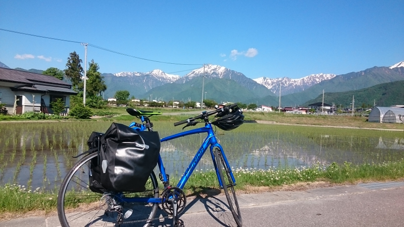

自転車解説ページ
自転車の種類
自転車の種類について，一般によく利用されるママチャリ(シティーサイクル)だけでなく，スポーツバイクについて有名な3種類の自転車も加えた，合計4種類についてそれぞれの特徴を解説していきます。ただし，私自身シティーサイクルとクロスバイクしか本格的に乗ったことがなく，その他の2種類の自転車に関しては，友達の自転車を借りて乗ったことしかない。そのため，信頼性にかける文章となっている可能性がある。
シティーサイクル
一般的な自転車であり，用途としては，通勤通学に用いられてることが多い。特徴としては，フレームが厚く頑丈に作られているため，耐久性に優れていること，泥除け，前かご，スタンド，ライトが標準装備でついており，価格もそこそこしっかりとしたもので，15,000円～45,000円くらいであり，流通量も多く安価であることなどが挙げられる。また，ものによっては，変速機が3段変速でついているもの，パンクに強いタイヤを装着したもの，キャリアがついているものもある。タイヤサイズとしては，26,27,28インチが一般的な大人向け自転車のサイズであり，スポーツ自転車と比べると，小回りなものが多い。さらに，タイヤの太さに関しても，35,37mmが一般的であり，スポーツ自転車(～28C)と比べてもそこそこ太いタイヤを履いている。その分だけパンクしにくかったり，空気圧上のクッション性能が良くなるため，乗り心地は良くなっていることが特徴である。
欠点としては，一般的なスポーツ車に比べても，走行上の快適さ，メンテナンス性，カスタマイズ性，重量などで劣ることが多い。これらについて詳しく述べると，走行上の快適さに関しては，タイヤが太く，路面抵抗が大きいため，エネルギー効率的な無駄が多く，ペダルが重いこと，メンテナンス性に関しては，パーツが複雑に入り組んでおり，自転車屋においてあるような専門的な工具を使って行うものが多いこと，カスタマイズ性に関しては，サイズや部品において適合するものが少ないこと，重量に関しては，平均的に20kgくらいの重量を有しており，持ち運びの不便さと，物理的に垂直抗力が大きくなることで，路面抵抗が大きくなることが，それぞれの詳細の欠点として挙げられる。
総評として，一般的にあまり頻繁に，また長距離を移動したりしない場合においては，その耐久力の高さと乗り心地(クッション性の高さと手軽さ)の面において優れていることから，通勤通学，買い出し用途においては合理的な自転車だと言える。しかし，走行性能は全体的に劣っているため，速さと快適さを求めるのであれば，向かない自転車である。よって，「一般利用の庶民的自転車」という文言がふさわしいであろう。
ちなみに，右画像の自転車は，自転車ジョイのアビーロードSという自転車であり，私が高校時代に用いていた自転車である。しっかりとした丈夫な自転車であるため，そこそこの悪条件でも安定して乗ることができる，信頼性の高い自転車であった。
クロスバイク
- 
- 度々登場しているこの写真。自転車は
MERIDA CROSSWAY 150R
クロスバイクは，スポーツバイクの中でもコストパフォーマンスが良いことが特徴であり，その手軽さと汎用性の高さから，一部で人気がある。値段は，30,000円～300,000円とピンからキリまであるものの，安く手軽に抑えたいと考えるならば，50,000円くらいが妥当だと考えられる。メーカーはTREK，Louis Garneau, GIANT, MERIDAあたりが有名でしょう。詳しくは，こちらの外部サイトが参考になります。特徴としては，フラットバーと呼ばれる，もともとMTB(マウンテンバイク)で用いられていたタイプのハンドルがついていることが多く，走行面で立ちこぎにおいても楽で安定した体勢が取れること，タイヤの太さとしても700×28Cが一般的で，ロードバイクの(700×25C)よりは太く，シティーサイクル(35mm)よりは細いことから，ロードよりはオフロードにおいても安定しやすいこと，スポーツバイクの中では，初心者でも取っつきやすく，ママチャリと比べてもそこそこの性能差があることから，かなり快適に走行することができること，カスタマイズ性の高さなどが挙げられる。なお，カスタマイズ性の高さに関しては，別の項目としてある，「自転車付属品紹介」の欄をご覧いただきたい。さらに，メンテナンス性の面に関しても，構造がスポーツバイクなだけあって，無駄を削ぎ落したシンプルな構造となっているので，修理しやすいことが挙げられる。重量の面でも，平均的に12kg程度であり，ロードバイクには劣るものの，軽量化という側面によって，路面抵抗が少なくなることから，ペダルの重さも軽くなり，快適な走行が可能になるのである。個人的な感覚だが，ママチャリと比べても2.5倍くらい快適さが増すのではないかと思われる。
欠点を挙げるとするならば，比較的タイヤが細いため，舗装路以外のオフロードとなると，少々心もとないところがあること，また，自転車としても，用途がどっちつかずで，特化していないこと，多少なりとも本格的な自転車を買おうと思うなら，お金がかかることが挙げられる。
総評すると，もともとクロスバイクはMTBとロードの特徴を良いとこどりしたような自転車であり，かなり汎用性が高い。街中を乗り回すような，通勤通学はもちろんのこと，休日のサイクリングで50kmくらいのサイクリングにも出かけることができる。また，自転車を自分の用途に合わせてカスタマイズすることで，あらゆる機能性を持たせることもでき，面白みのある自転車でもある。そのため，是非ともシティーサイクルを普段お使いの皆様には，一度1,2万円の追加料金を支払って，その快適さを味わっていただけたらなと思っている。以上のことから，クロスバイクは，「比較的安価で快適で，汎用性の高い自転車」という文言がふさわしいだろう。
ロードバイク
ロードバイクは，一般的に，舗装路を走るのに特化した自転車として知られており，スポーツバイクにおいては最も速い自転車の種類として，一般的な自転車である。そのため，数々の大会においては，ロードバイクが使用されることが多く，その大会においては，世界的にも有名なツール・ド・フランスや，長野県松本市におけるツール・ド・美ヶ原(ヒルクライムレース)などが挙げられる。特徴としては，とにかく走行性能が良く，快適で速いことが特徴であり，その詳細の要素として，ドロップハンドルが装着されているため，前景姿勢が取りやすく，空力特性に優れていること，フレームに軽くて，剛性がある素材が使われていること，細身のタイヤ(700×23C, 25C)が使われており，極限まで路面抵抗を減らしていること，変速のギア比における幅が広く，勾配などの環境変化においても多大な適応性を示すことが挙げられる。
欠点としては，舗装路での走行に特化しているため，未舗装路(1オフロード)における安定性が，タイヤの細さが原因ですこぶる悪いこと，高価であり，一般的な価格帯で75,000円～1,000,000円とピンキリな価格差があり，基本的には，10万円代の自転車を買う必要があること，そして，盗難における被害が大きく，車体の軽さゆえ盗難もしやすいことも踏まえ，対策をしっかりとしておく必要があり，取り回しにくいことなどが挙げられる。
総評としては，かなり走りに特化した自転車であるため，頻繁に長距離のサイクリング(50km～)に出かける人にはオススメである。ただし，走行できる道路が限られてくるため，街乗りのように段差が多く，盗難被害に合いやすい状況には適さなく，より限定的な用途に限られることが欠点として挙げられる。とはいえ，走りと快適さを追求するのであれば，大変素晴らしい自転車であり，個人的な感覚としては，ママチャリの4.0倍以上は快適な感覚でいるため，金銭的な余裕があれば，是非乗って見たい自転車であるとも言える。キャッチフレーズで述べるなら，「走りの頂点を体感! 最高に快適かつ軽い走りで遊び尽くせ!」なんて文言が似合いそうなものである。もちろん，遊びの範疇をこえて，大会における成績上位を目指すのもアリである。
MTB(マウンテンバイク)
MTBは，オフロードに特化した自転車であり，その耐久力の高さと，安定性で，とことんロードとは違ったベクトルで遊びつくせる自転車である。一般的には，山での起伏にとんだコースでの長距離走行を行う，クロスカントリーやトレイルに参加したり，山を駆け降りるダウンヒルといった楽しみがあって，街中とは違った，自然豊かなコースをアウトドアとして楽しむことができるのが，魅力である。ちなみに，長野県においては，国営アルプスあづみの公園において，MTBの体験コースがあったと思われるので，興味のある人は参加してみるのも良いだろう。特徴としての詳細を述べるならば，フレームが厚く作られており，さらにはサスペンションがついているものもあったりと，衝撃吸収や耐性に優れているのが特徴である。また，タイヤは太く，ゴツゴツとした見た目となっており，路面をしっかりと捉えてくれるため，グリップ力に優れており，オフロードにおいて特化されている点も特徴である。値段は50,000円～300,000円くらいの感覚であり，安物の自転車においては，ルック車と呼ばれる，見た目だけがMTBな物も多く存在するため注意が必要である。ブレーキは，ディスクブレーキと呼ばれる，タイヤの中心にあるディスクに直接ブレーキパッドを当てる方式のブレーキが採用されており，一般的な自転車に採用されているVブレーキと呼ばれる，ブレーキシューをタイヤのリムに直接当てて摩擦を起こす方式に比べて，天候の悪条件における，ブレーキ性能の低下が抑えられていることも一つの利点である。
欠点としては，街中を走ること自体には，乗り心地という面において適しているものの，このような舗装路に特化しているタイヤではないため，ママチャリと同様か，それ以上に走行面において重くなってしまう傾向がある。これに関しては，改善するなら，スリックタイヤと呼ばれる溝がないタイヤに履き替えるなどの工夫が必要である。また，少々値がはるのも欠点であり，上記のように，しっかりとした自転車を買うのであれば，80,000円以上は支払いたい自転車であるため，ロードよりは高くないにしても，そこそこの値段はかかってしまうのである。
総評としては，オフロードでの遊びには最高の自転車ではあるが，用途は限られてくるため，日常での利用はしにくい面もある。ただし，MTBで体験できることというのは，何にも代えがたい体験であり，その特有の面白さに取りつかれる人もいるのである。そのため，個人的には，是非とも人生に一回はスキーやバンジージャンプのような感覚で体感してみたい体験であると考えており，皆様においても興味のある人は，調べてみると良いであろう。キャッチフレーズで述べるのであれば，「非日常を体感せよ! オフロードならではの魅力!」といった感じになるのであろうか。
その他の自転車の種類
上記の4つ以外の自転車はあまり詳しくないため，軽く概要だけ紹介する。詳しくは各自調べて欲しい。
E-bike
E-bikeは電動アシストユニットを取り付けした自転車である。これは，近年注目を浴びている自転車でもあり，環境・エネルギー問題が懸念される昨今，エネルギー効率的な観点から，環境に優しい自転車ともされている。確かに，燃料を必要とせず，主なエネルギー源はあくまで人間なのだから，絶妙なタイミングで，その動作を補うことでエネルギー消費も抑えられるのであり，そもそも，バイクや自動車に取って代われる存在となり得るのであれば，安価で大変良い影響を及ぼすことなどの利点が挙げられそうなものである。
最近では，いろいろな自治体からの補助もあって，復旧率も高まっており，観光地などの駅前にもレンタルバイクとして設置しているところが増えている。値段も200円/hくらいであったと思うから，是非タクシーなどの代わりに利用してみるのも手であろう。
ミニベロ(小径車)
ミニベロは，タイヤの周長が短いことが特徴であり，その分たくさん漕がなければならないように思うが，その分ギア比を高く設定するなどして補うことで，逆に小径を活かした，加速力重視の快適な走りが実現されるのである。また，軽く小さいため取り回しがよく，そのまま車に搭載したり，折りたたみ機能があれば，運ぶのも容易であるという利点もある。この折りたたみに関しては，かなりありがたく，実際のところ，他の自転車においては，クロスやロードで折りたたむことは一応出来なくはないのだが，かなり手間もかかるため，頻繁に運びたい場合には，やはり折りたたみ用の自転車を買った方が良いであろう。値段としても，電動機つきでなければ，30,000円程度で収まるため，十分ママチャリ並みの価格帯で購入しやすいこともメリットの一つである。
ランドナー
ランドナーはロードバイクに似た見た目をしているが，頑丈な作りと，搭載性の高さなど，長距離旅行に特化した特性を持った自転車である。もともとは，フランスなどヨーロッパの方でツーリング向けに開発された自転車であり，機能面としては，ロードバイクに対して，太いタイヤとキャリア，泥除け，サイドバッグなどの旅行に便利なオプションを着けるのが容易であるという特徴がある。また，輪行(後述)を意識した仕様となっていることも多く，やはり，旅行を行うのには，是非活用していきたい自転車となっている。個人的には，現在，長距離をクロスバイクで，いろいろ搭載しながら行くことが多くなってきているので，この自転車があればなと考えているところであった。しかし，値段はロードバイクと同じくらいの値段がするのと，取り扱い店舗が日本においては少ないため，部品調達やメンテナンスに苦労する可能性があるなどのデメリットも存在するため，少々マイナーな部類の自転車となっている。
自転車の付属品
スポーツバイクに関しては，シティーサイクルのような一般的な自転車とは違って，軽量化やカスタマイズ性を意識した仕様となっているため，装備品を自転車本体とは別に用意する必要がある。そのため，この項では，それら装備品について紹介していく。ただし，自転車を乗るうえでの基本的なものはあえて省き，以降の内容はスポーツバイクに乗る際にあると良いものを挙げていく。
ヘルメット
ヘルメットは，「こんなの小学生や中学生の頃までしかしていなかったな」なんていう人もいそうなものであり，少々ダサいと感じる人もいるかもしれない。しかし，ヘルメットというのは，頭を保護するだけでなく，空力特性においても効果を発揮するのである。そのため，スポーツバイクに乗るものとしては，高速時の万が一に備えた安全性の実現と，合理的走行を実現するにあたって，是非とも着用するべきものなのである。筆者としても，雨天時の走行でスリップを起こし，横転した際には，ヘルメットがあってよかったと感じたものであり，さらには，しばらく着用し続けていると，そればいつの間にか習慣となり，安心感をもたらすと共に，自分のヘルメットがなんだか相棒であるかのように感じてくるのである。
フロントライト
フロントライトは，自転車の前方につけるライトのことであるが，夜間に走行する際には道路交通法の第53条によって，ライトの点灯が義務付けられているため，用意する必要がある。この際，どのくらいの頻度で夜間を走行する可能性があるかで，ライトの検討の仕方が異なってはくるが，そこそこ遠出して，夜間の走行をする場合には，私も用いているような(同じメーカーでも違うライトであるが)，画像のようなライトをオススメする。画像のライトは，CATEYEという自転車乗りに取っては有名な，信頼性の高い日本メーカーのものであるが，約5000円で，十分実用面で使いこなせるこのUSB充電式のライトが購入できる。
実際に使ってみて良かったところは，100ルーメン以上の明るさがあるため，夜間の峠道においても，先を見通すことができて，なおかつ，ライトの持ちがそこそこ良いところが良かった。今回はUSB充電式のものを紹介したが，他にも乾電池式のもの，ダイナモ式のものが存在し，USB充電式のものにおいては，外出先での充電に困難が生じるかもしれないが，電池の持ちが良いのが特徴である。
テールライト
テールライトは，フロントライトに比べれば，必要性が落ちるかもしれないが，夜間の見通しが悪い状況下において，車の交通が激しい場所だと，命の危険を感じるため，是非とも欲しいものである。特に，トンネル内や峠道においては，自動車側に気づいてもらうことが大変重要で，その注意喚起と自動車への配慮から，やはり勝っておいた方が良いであろう。値段は，画像のライトが3000円くらいで買える。画像のライトは，先ほどと同様にCATEYEのライトであり，USB充電式でもある。こちらのライトは，照度は劣るものの，点灯時間が長く，さらに，赤色の光を放つため，そこそこ目立ちやすい。そのため，是非とも夜間の危険な道に出る際には，装着しておきたいものだ。
サイクルコンピューター
サイクルコンピューターはあるのとないのとでは，自転車に乗るモチベーションが全然違ってくるものである。そもそもサイクルコンピューター(サイコン)とは何かについて説明すると，サイコンは，自転車の走行速度や走行距離を計測するものであり，ものによっては，時間測定や，平均速度，ケイデンス，勾配変化記録，GPSなどさまざまな機能を持つものもあり，ついていると大変面白いものである。画像のライトは例にもよって，あのCATEYEのものであるが，ボタン電池を入れて動かすタイプで，その電池の持ちは大変よく，耐久性もそこそこあって，機能性にも優れている大変優秀なサイコンである。値段は5000円ほどするが，一度買ってしまえば，長い間楽しめるので，オススメである。
サイクルグローブ
サイクルグローブは，名前の通り，サイクリング用の手袋であるが，一般的な手袋と異なる点として，自転車のグリップを握った際に擦れやすいところに関しては，パッドが入っており，その摩擦による手のダメージ防止と，クッション性による，衝撃吸収性など，人体の疲労軽減と保護という役割を担っているのである。さらに，しっかりと握れることによる，操作性の向上も期待できる。もちろん，これだけの効能があるのだから，ちょっとした差が大きな影響となり得る長距離サイクリングにおいては，是非とも欲しい代物であり，あるのとないのとでは多大な差が生まれてくるものである。値段も2000円くらいで買えるので，是非とも導入してみてはいかがであろうか。
キャリア
キャリアは，荷物をたくさん運ぶ際に，あると大変便利なものである。ただし，そのままでは荷物を運びづらいので，下記にあるサイドバッグも一緒に購入を検討することを奨める。荷物を搭載する際には，そのままキャリアを利用するのであれば，ロープを買ってきて，その上にできる限り安定しやすい形式，例えば，段ボール箱に詰めたり，固定しやすい形状になるよう袋に詰めたりしたうえで，上から括りつけることが重要である。もし，アウトドアに興味がある人であれば，テントやシュラフ(寝袋)を固定することもでき，これだけでも最低限の自転車旅が楽しめる。もっと具体的なイメージが欲しい人は，アニメや漫画でメディア展開されている「ゆるキャンΔ」をご覧になると参考になるであろう。このゆるキャンΔにおいては，当初バイクを購入する前の志摩リンがこのような形態にて，テントなどを運んでいる。
サイドバッグ
サイドバッグは，キャリアに括りつけたり，シートポストに括りつけたりするなどの工夫をして取り付けるタイプの自転車バッグである。荷物が多くなる際には，自転車において良く用いられるリュックサックなどの直接的に体に負担がかかるタイプの運び方だと，身体に影響が出かねないので，このように，自転車の方に負担させようという発想も大切なのである。サイドバッグとはいっても，形態はさまざまであり，フロントタイヤの付近や前かごがつくようなところを利用するタイプと，後輪付近において，キャリアを利用したり，フレームに括りつけたりして取り付けるタイプなど様々であるが，一番容量を増やしやすいのは，キャリアに括りつけるタイプのものだと思われる。このように運用している写真については，私が行ったサイクリングの写真において，写っている私の自転車がまさにそれであり，画像のようなサイドバッグが括りつけられていることが確認できると思う。今回の画像にあるバッグはオルトリーブのサイドバッグであり，このバッグは大変好評かつ有名なバッグである。値段は少々張って12,000円くらいしてしまうが，それでも使い勝手は非常に良いため，私のような，荷物を運ぶタイプの運用形態の人にはオススメであり，日常生活においても買い出しの際にスポーツバイクを用いるのであれば，大変有用なものでもあるためオススメだ。
パンク修理セット
パンク修理キットは，遠距離のサイクリングに出かける際には，是非とも用意したほうが良いものであって，さらに，パンクは自転車の不調においてNo.1といって良いほどの頻度で起こるものであるから，パンク修理のやり方も手際よく行えるように習得しておく必要がある。パンク修理キットの内部には，自転車のパンク穴をふさぐためのパッチとゴムのり，タイヤチューブを外すためのタイヤレバー，虫ゴムと呼ばれる，自転車の空気を入れる空気バルブに用いられている部品，パッチを貼るために削る用途に用いるやすりなどが入っている。他にも修理する際には，パンク穴を確認するための水を溜めておく容器，空気入れが必要なため，修理する際には別途用意する必要がある。なお，筆者は，荷物容量に余裕があれば，これらについても持っていくようにしている。もしなかった際には，水を溜める容器を買うためだけに，1時間くらい歩き続けたことが何度もあるからだ。
もし，修理するのにもっと手軽に行いたい人がいれば，その際には，タイヤレバーと空気入れ，タイヤチューブさえ持っていけば，簡単に交換できる。
携帯工具
携帯工具は，パンク以外にも，もっと重大なトラブルが起こった際の修理に使えたり，輪行時の付属品取り外しや，部品交換など様々な用途で，その知識があれば使いこなせるものである。スポーツ自転車の修理は，大抵のものが，ドライバーと六角レンチさえあれば直ることも多いが，他にもチェーンの不調があった際には，チェーンカッターが必要になったすることもあるので，どこまでの不調を想定するのかで，その道具のセットは異なってくる。どうしても，知識がなく修理できない場合には，やはり自転車屋に持ち込むことも必要になるし，電車路線などが近くにあれば，輪行して自転車を持ち帰るといった手段を余儀なくされることもある。このような状況下において必要なのは，こういった場面に対処できる知識と経験であり，最悪の自体もある程度予測し，準備しておくことがベストなのだと思う。
携帯空気入れ
上記の通り，自転車がパンクしたときや，自転車での旅行が長期に及んだ時，あくまで携帯であるため，急場しのぎのような側面もあるが，持ち歩いておくことを奨める。スポーツ自転車においては，バルブ形状も一般的な自転車とは異なってくるため，各自で確認して欲しいが，クロスバイクやロードバイクにおいては，仏式バルブ，シティーサイクルにおいては，英式バルブ，マウンテンバイク(MTB)においては，米式バルブに合っていることが必要となる。
チェーンオイル
チェーンオイルは，自転車の走行性能を保つ上で重要なものであり，雨天によって，オイルが十分に効果を発揮しなくなったときや，しばらく注油していないときには，チェーンの洗浄と共に注油することをオススメする。これを行うだけで，そこそこ快適さが変わってくるものであり，スポーツバイクにおいては，特に重要となることから，良かったら，行ってみて欲しい。
スタンド
スタンドは，自転車を立てるために用いるものであるが，スポーツ自転車においては，軽量化を重視する傾向にあることから，標準装備とはなっていない。そのため，街乗りで用いる際には，やはりあった方が便利であり，値段も2,000円ほどで購入できる。なお，輪行する際には，邪魔になってしまうことが大半なため，ドライバ―によって取り外しておく必要がある。
スタンドの形状にも様々あるが，一般的な片足キックスタンドにおいては，後輪型とセンター型などがあり，センター型は取り外しできる自転車が限られるものの，輪行においては，そのままでも利用できるメリットもある。一方両足キックスタンドに関しては，シティーサイクルに導入されることが多いが，非常に安定した停車が期待できる。他にも，修理する際に用いると便利なディスプレイスタンドなども存在し，こちらは，後輪が浮いた状態になることから，空気入れなどの際の利用が便利である。
サイクルウェア
サイクルウェアは，なくてもよいが，あると大変便利なものであり，空力効果と，軽量化，体温調節などの面において，自転車に最適化されていることから，大変ライドが快適になる。とはいえ，実のところ，筆者はお金の都合上まだ購入できていないので，是非とも欲しいところである。
ビンディングペダル
ビンディングペダルは，ビンディングシューズを合わせて用いるタイプのペダルであり，普通のペダルと違って，ペダルを引き上げる力をも，クランクを回る力に変換することができるため，かなり無駄なく自転車を走らせることができるようになる。
輪行について
輪行とは，自転車を専用の袋に入れることで，持ち運べるような形状にし，公共交通機関を用いて，遠くへ持ち運ぶ行動のことである。そのためには，いくらか用具を揃える必要と，自転車の条件があり，その条件とは，折りたたみ式の自転車であるか，スポーツバイクにおいてクイックレリーズレバーが採用されていることが条件となる。なお，一応それ以外の自転車での輪行も分解さえできれば可能かもしれないが，かなりの手間を要することが想像できる。次に輪行に必要なグッズについて紹介すると，まずは，輪行袋と呼ばれる，自転車を収納する袋，次に，自転車を傷つけないために必要なのは，スプロケットカバーとフレームカバー，エンド金具である。また，自転車を固定する際には，固定用ベルトが必要であり，他にも肩にかけて持ち運ぶ際には，ショルダーベルトが必要，といろいろな準備をする必要がある。詳しくはそれらの達人が解説しているYouTube動画を紹介するので，そちらをご参照いただきたい。
メンテナンスについて
自転車において必要となるメンテナンスのスキルとしては，以下のようなものが挙げられる。
パンク修理，洗車，注油，チューブ交換，タイヤ交換，ブレーキ調整，ディレイラー調整，バーテープ交換，シフトワイヤー交換，ブレーキワイヤー交換，ブレーキ交換，ホイールハブやヘッドパーツなどのグリスアップ，振れ取り，クランク交換，ディレイラー交換，ペダル交換など。
これらのメンテナンスを覚えることで，日頃から自転車のパフォーマンスを上げておくことができ，もしも自転車トラブルがあった際でも，その場で直すことができるため，出来る限り日頃から自分でメンテナンスしておくことが望ましい。
こういったメンテナンスの知識をどこから手に入れているのかといった質問があるが，次の サイトの人が出している動画だったり， 他の方が出しているYouTube動画などから学ぶことができる。 マニュアルを参照するときには，自転車パーツメーカーであるSHIMANOが公式に各パーツごとにマニュアルを出しているのでそれを参照することで，習得することが可能だ。 工具セットを用意したい場合には， Amazonの次のリンクの商品などを利用することで，ある程度の修理はできるようになる。 のでオススメだ。